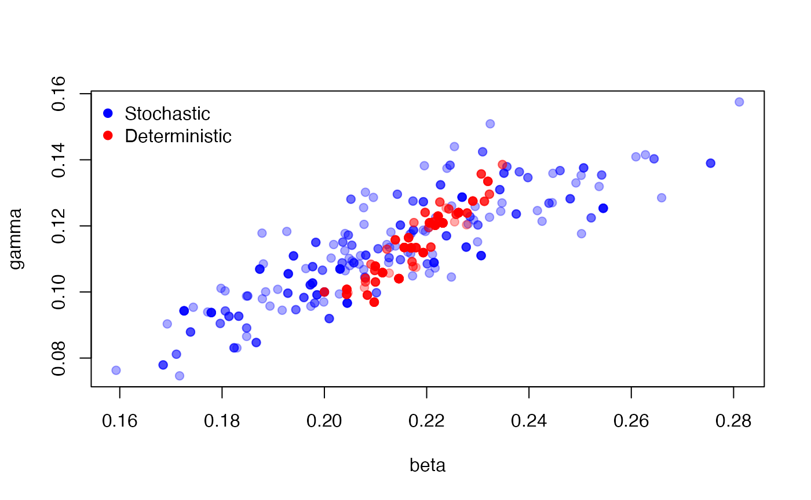

Stochastic models are slow! Ignoring issues of parallelism and fast random numbers (see vignette("design")), you still must run the model some number of times within a particle filter to estimate the likelihood. We’re experimenting with alternative approaches to approximate the likelihood, including running the stochastic models “deterministically” with a single particle. In this case calls to rbinom(n, p) (for example) will be replaced with their mean (n * p). This is not exactly the same model as the stochastic model, nor is it directly even a limit case of it. However, we hope that it still lands in about the right area of high probability density and can be used for a pilot run before running a pmcmc properly.
We demonstrate this, as in vignette("sir_models") with our simple SIR model.
sir <- dust::dust_example("sir")The data set is included within the package:
incidence <- read.csv(system.file("sir_incidence.csv", package = "mcstate"))
dt <- 0.25
data <- mcstate::particle_filter_data(incidence, time = "day", rate = 1 / dt)A comparison function
compare <- function(state, observed, pars = NULL) {
if (is.na(observed$cases)) {
return(NULL)
}
exp_noise <- 1e6
incidence_modelled <- state[1, , drop = TRUE]
incidence_observed <- observed$cases
lambda <- incidence_modelled +
rexp(n = length(incidence_modelled), rate = exp_noise)
dpois(x = incidence_observed, lambda = lambda, log = TRUE)
}An index function for filtering the run state
index <- function(info) {
list(run = 5L, state = 1:5)
}Parameter information for the pMCMC, including a roughly tuned kernel so that we get adequate mixing
proposal_kernel <- rbind(c(0.00057, 0.00034), c(0.00034, 0.00026))
pars <- mcstate::pmcmc_parameters$new(
list(mcstate::pmcmc_parameter("beta", 0.2, min = 0, max = 1,
prior = function(p) log(1e-10)),
mcstate::pmcmc_parameter("gamma", 0.1, min = 0, max = 1,
prior = function(p) log(1e-10))),
proposal = proposal_kernel)First, run a stochastic fit, as in vignette("sir_models"). Here we use 500 particles to get a low-variance estimate of the likelood:
n_particles <- 500
control <- mcstate::pmcmc_control(300)
p1 <- mcstate::particle_filter$new(data, sir, n_particles, compare,
index = index,
n_threads = dust::dust_openmp_threads())
res1 <- mcstate::pmcmc(pars, p1, control = control)then again, with the deterministic filter. The only change is to use the object mcstate::particle_deterministic and omit the n_particles element to the constructor (there will only ever be one particle!) and the n_threads element which has no effect here.
p2 <- mcstate::particle_deterministic$new(data, sir, compare, index = index)
res2 <- mcstate::pmcmc(pars, p2, control = control)Here, we plot the estimated points for the stochastic (blue) and deterministic (red) parameter samples, showing overlapping but different distributions:
plot(res1$pars, col = "#0000ff55", pch = 19)
points(res2$pars, col = "#ff000055", pch = 19)
legend("topleft", c("Stochastic", "Deterministic"),
pch = 19, col = c("blue", "red"), bty = "n")